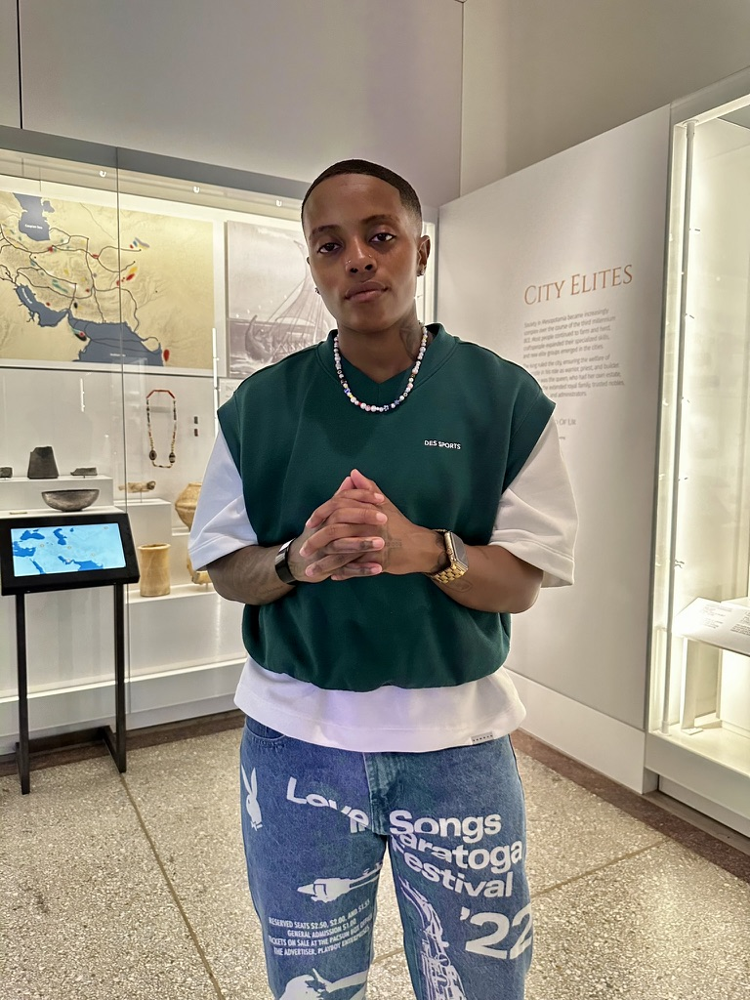

About Us

Our Mission
Apprenti bridges the tech talent gaps by adapting the time-tested model of apprenticeship to meet evolving workforce needs. Apprenti is igniting a new paradigm to develop untapped talent and strengthen the tech ecosystem nationwide.
Jaha Knight
Jaha Knight serves as a director of product strategy at Apprenti, aligning roadmap priorities with organizational goals while mentoring teams to deliver user-centric, measurable outcomes.
Adam Ustby
Adam Ustby is a senior operations leader at Apprenti, optimizing processes, data systems, and partner delivery to drive sustainable growth and workforce impact.
Henok Ketema

Henok Ketema is a senior program manager at Apprenti, leading cross-functional initiatives that scale apprenticeship pathways and strengthen engineering operations across the organization.
Spencer Lohrmann

Spencer Lohrmann is a senior executive at Apprenti, guiding strategic growth and innovation while championing talent development across the organization.